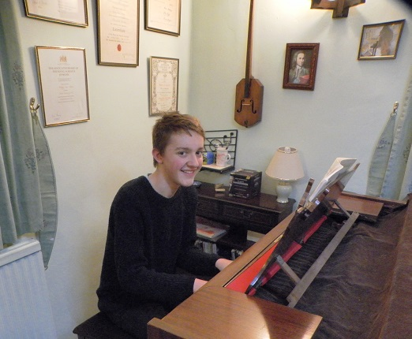

Greg May

Over the last 25 years, St Neots Sinfonia have welcomed enthusiastic young musicians from our local schools and given them the opportunity to enjoy taking part in well known orchestral works alongside more experienced players. For our Spring concert 2016 we are delighted to welcome Gregory May, from Bolnhurst, not as a member but as our youngest ever guest soloist. Greg will be performing Mozart's Piano Concerto in A, K488 with the Sinfonia.
Greg is in year 9 at Bedford Modern School, and already has a wide range of musical talents, playing piano, saxophone, double bass, clarinet and church organ. He's also no stranger to public performance, being part of four orchestras and bands at school, playing saxophone with Bedfordshire Big Band, and being the pianist for the choir at Milton Ernest and Thurleigh. Twice a month he is the church organist for Sunday services at two churches in north Bedfordshire.
Greg started to learn to play the piano in 2010 when he was just 9 years old and achieved a near-perfect distinction at grade 8 in December 2015. He started the saxophone in 2011 and is working at present towards his second grade 8. In the near future he will start working towards a Diploma in piano, and in the longer term hopes to develop his skills as a composer. Maybe one day we will be performing his work - we would be delighted to have the chance!